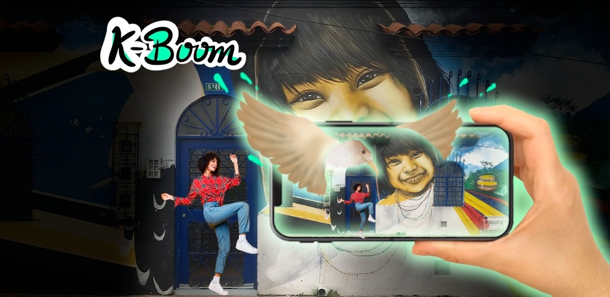

¡Descubre Kboom!
Transforma el arte urbano con tecnología avanzada.

¿Cómo Funciona Kboom?
Captura o subida de imagen del mural:
Sube la imagen de tu mural a nuestra plataforma.
Video generado por IA:
Disfruta de un video interactivo que amplifica la creatividad de tu mural.
Filtro de realidad aumentada:
Interactúa con tu mural en un entorno AR innovador.
Publicación en portafolio digital:
Ubica tu obra en un portafolio digital para que todos la aprecien.
¡Únete a la Revolución del Arte Urbano!